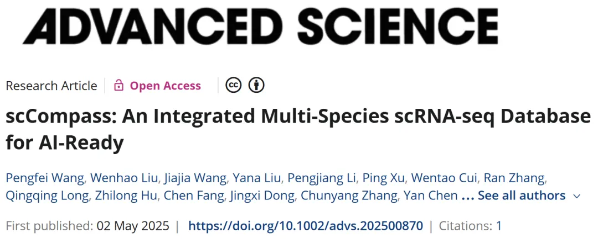
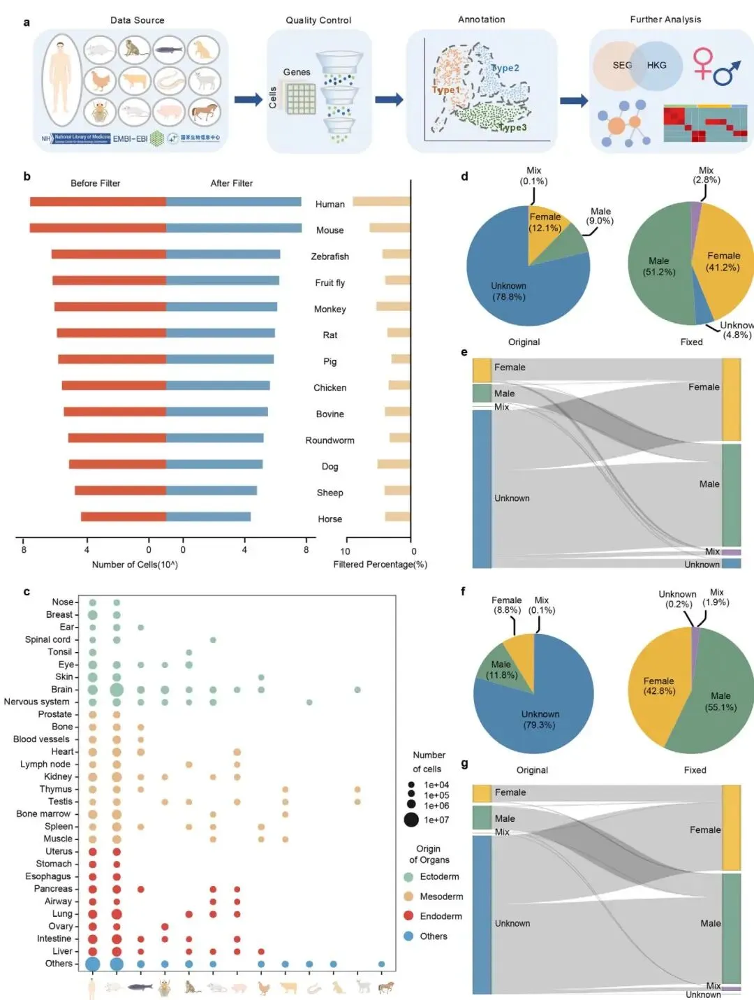
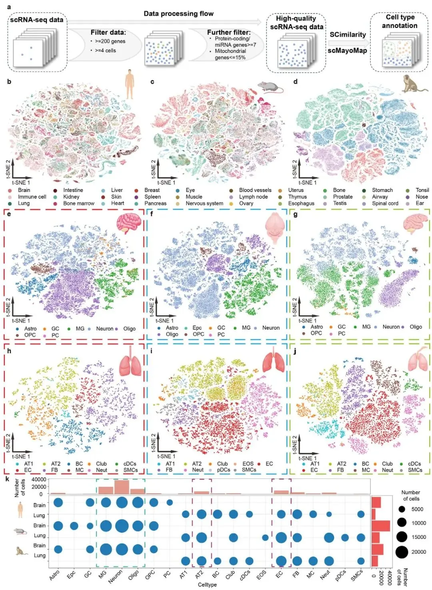
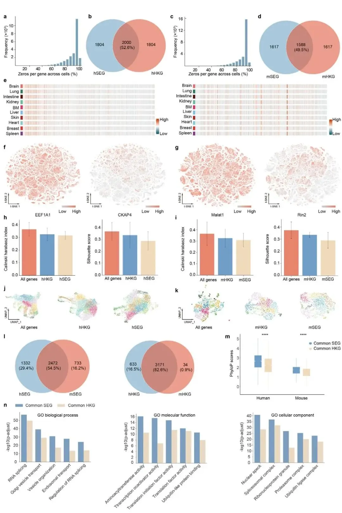
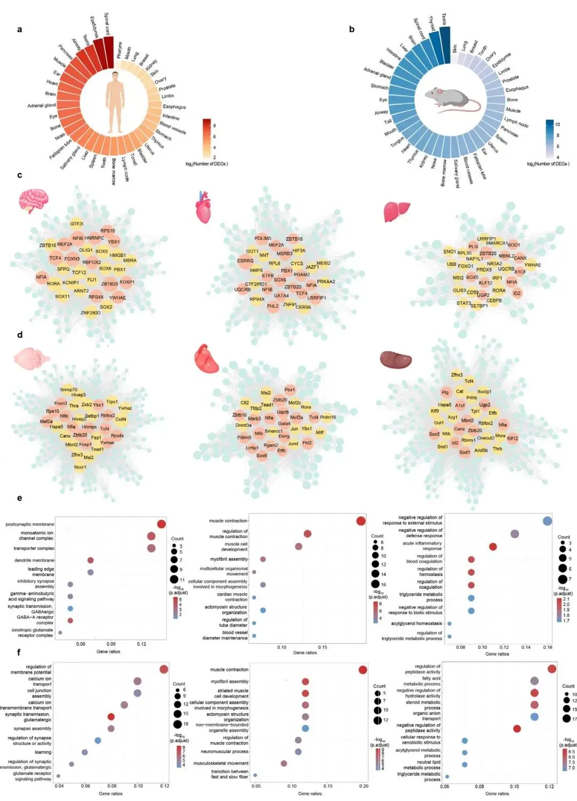
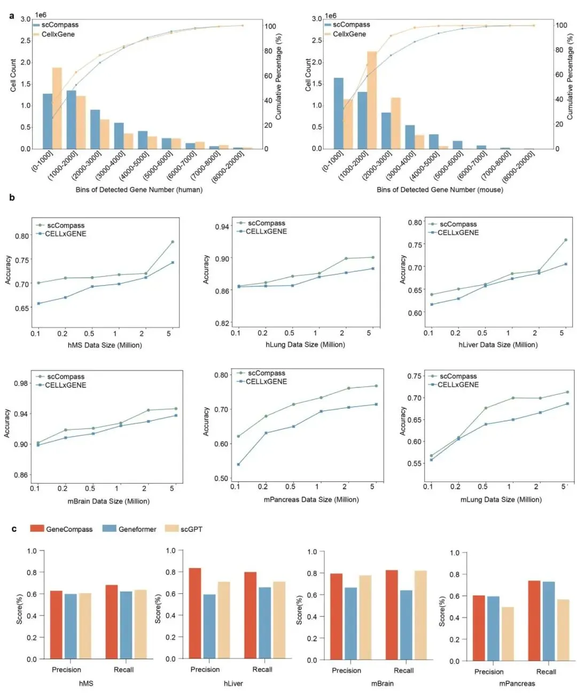
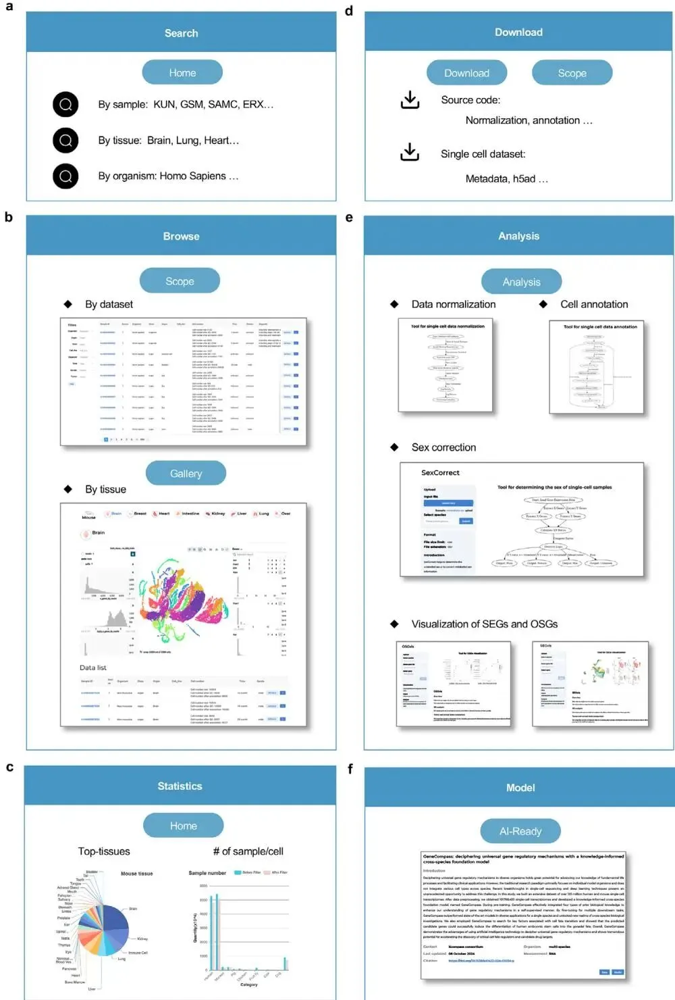

1.05亿个单细胞| AI跨物种scRNA-seq整合利器！
原文：https://mp.weixin.qq.com/s?__biz=MzAwMzIzOTk5OQ==&mid=2247530204&idx=1&sn=d81940d116875438724f2e02fd1cd706&chksm=9b3c0f8cac4b869a35b8b4e1bb5fa662e88009dd61efff0d88edf4429bc1824ef4403994151e#rd 合集：单细胞教程全收录
一、写在前面
本次分享的是2025年发布于《Advanced Science》的文章（IF：13.669）“scCompass: An Integrated Multi-Species scRNA-seg Databasefor Al-Ready”
DOI: 10.1002/advs.202500870
**链接： https://pubmed.ncbi.nlm.nih.gov/40317650/ **

单细胞 RNA 测序（scRNA-seq）技术的迅猛发展，为解析细胞异质性和基因调控机制提供了前所未有的机会。然而，这一技术所产生的海量数据也带来了显著挑战：数据处理的不一致性、标准化难题以及对大规模、高质量数据集的需求 ，成为制约单细胞生物学研究和人工智能（AI）应用的关键瓶颈。scCompass 的诞生正是为了应对这些挑战。它通过统一的标准化流程 ，整合了来自 13 个物种的约 1.05 亿个单细胞转录组数据 ，构建了一个多物种、模型友好的综合数据库 。scCompass 不仅为研究人员提供了一个探索细胞动态和基因表达的强大平台，还通过识别稳定表达基因（SEGs）和器官特异性基因（OSGs） ，揭示了隐藏在庞大数据中的生物学规律。更重要的是，scCompass 的 Al-Ready 技术使其成为训练单细胞基础模型的理想资源 ，推动了 AI 在生命科学中的创新应用。本文将详细介绍 scCompass 的构建过程、核心功能及其在单细胞研究和 AI 驱动分析中的价值。** **如果你的计算机不足以支持你的计算需求，可按需选用适合自己的计算资源： 共享(经济实惠)：足够支持你完成硕博生涯的生信环境独享(省电省心)：生信分析不求人需要GPU算力的同学不妨看看：RTX5090、4080S、5070显卡上机
访问链接：https://biomamba.xiyoucloud.net/
** 如果需要 数据分析指导 、生信热点全文复现 、自测数据个性化分析 辅导、常态化实验学习，欢迎联系客服微信[Biomamba_zhushou]**
**二、主要结果 **
1. scCompass 的构建：一个统一的、大规模的、多物种的单细胞转录组数据
本节详细介绍了scCompass数据库的构建流程，其核心在于通过标准化的流程，整合出一个规模庞大、物种多样且元数据可靠的数据集。研究团队遵循一个结构化的整理模型（图 1a），从NCBI GEO等公共数据库中收集了涵盖人类、小鼠及其他11个物种的单细胞转录组原始数据。初始数据量约为1.13亿个细胞的表达矩阵，来源于超过15000个样本。随后，团队对所有数据应用了统一的质量控制（QC）流程，有效过滤掉了质量不佳的细胞，最终保留了约1.05亿个高质量细胞 用于后续分析，其中人类和小鼠的数据量最大，均超过了5000万个细胞（图 1b；图 S1a）。该数据库对人类和小鼠的器官覆盖最为全面，为后续进行器官特异性基因分析奠定了基础（图 1c）。
在数据整理过程中，一个关键的创新点是对样本元数据，特别是性别信息的校正。研究者发现，原始数据中有近80%的人类和小鼠样本性别信息被标记为“未知”，这极大地限制了后续分析的深度。为了解决这一问题，他们开发了一种新颖的性别校正（gender correction） 方法。该方法通过分析睾丸和卵巢等性别特异性组织中X和Y染色体基因的表达分布，为判断样本的生物学性别建立了可靠的阈值（图 S1c–f）。利用该方法，研究团队不仅成功地为绝大多数“未知”性别的样本赋予了准确的性别标签，还验证了部分已有标签的正确性。经过校正后，性别未知样本的比例在人类数据中从78.8%骤降至7.3%，在小鼠中从79.3%降至2.1%（图 1d-g）。这一严谨的元数据整理工作，显著提升了scCompass数据库的准确性和可用性，是其区别于其他数据库的重要特色之一。

图1
2. 构建 scCompass 的单细胞图谱
在构建了标准化的数据集后，本节详细阐述了作者如何为scCompass建立一个全面且一致的单细胞图谱。面对来自上千个不同研究、注释标准不一的海量数据，手动进行细胞类型注释是不现实的。因此，研究团队采用了一套统一的自动化细胞类型注释流程 。他们首先对数据进行了严格的质量控制，然后评估了SCimilarity和scMayoMap两种先进的自动化注释工具。基准测试表明，两种工具的准确率均超过80%，但特别是在处理多物种数据时，SCimilarity表现更优，因此被选为主要的注释工具，以确保在13个物种间注释结果的一致性和准确性（图 S2a,b）。
通过这一自动化流程，作者成功为整个数据库注释了超过200种细胞类型，并构建了高质量的单细胞图谱（图 2a）。为了展示图谱的质量，文章以细胞数量最丰富的人类、小鼠和猴子为例，重点展示了大脑 和肺 这两个器官的注释结果（图 2b-d）。在大脑组织中，图谱成功鉴定出少突胶质细胞、小胶质细胞、谷氨酸能神经元等关键细胞类型；在肺组织中，则精确识别出I型和II型肺泡细胞、内皮细胞等主要细胞群体（图 2e-j）。更重要的是，通过跨物种比较，作者发现这些核心功能细胞（如大脑中的神经元和小胶质细胞，肺中的II型肺泡细胞和内皮细胞）的相对比例在人、小鼠和猴子之间高度保守（图 2k）。这不仅验证了自动化注释流程的可靠性，也从单细胞层面揭示了关键器官在哺乳动物演化过程中的细胞组成保守性。

图2
3. 从大型数据集中识别稳定表达基因（SEGs）
本节内容利用scCompass庞大的数据集，挑战并完善了生物学研究中的一个基本概念——管家基因。传统的管家基因（Housekeeping Genes, HKGs） 是基于群体（bulk）测序数据定义的，被认为在所有细胞中都稳定表达。然而，在单细胞分辨率下，许多HKGs的表达并非恒定。为此，作者提出了稳定表达基因（Stable Expression Genes, SEGs） 的概念，旨在识别出真正在单细胞层面稳定表达的基因。他们的识别方法非常直观：在scCompass近1.05亿个细胞的数据中，对所有基因按照其“零表达”的细胞比例进行排序，零表达率最低的基因（即在最多细胞中被检测到的基因）被定义为SEGs。
通过比较，作者发现SEGs与传统的HKGs只有大约50%的重叠，说明这是一个相关但又不同的基因集。尽管在伪群体（pseudo-bulk）层面，两组基因的表达都很稳定，但在单细胞层面，SEGs（如 EEF1A1 , Malat1 ）的表达均一性远超HKGs（图 3f,g）。为了进一步验证SEGs的稳定性，作者进行了一项巧妙的功能性测试：用不同的基因集（所有基因、HKGs、SEGs）对细胞进行聚类。结果显示，使用SEGs时聚类效果最差，细胞簇的区分度最低（图 3h-k）。这恰恰证明了SEGs的表达在不同细胞类型间最为稳定，因为它提供的差异信息最少，对区分细胞类型的贡献最小。
更有意义的是，通过对人类和小鼠的共有SEGs和HKGs进行比较分析，作者发现SEGs在进化上表现出比HKGs显著更高的保守性（图 3m）。基因功能（GO）富集分析也显示，SEGs参与了比HKGs更广泛的基础生物学过程（图 3n）。最后，在人类和小鼠的发育时间序列数据中，SEGs同样展现出跨越不同发育阶段的高度表达稳定性（图 S5a-d）。这些证据共同表明，基于scCompass大规模数据发掘出的SEGs，不仅是比传统HKGs更可靠的单细胞研究内参基因，更可能代表了一组在进化中更为核心和保守的基础功能基因。

图3
4. 器官特异性表达基因的定义
本节展示了scCompass数据库在系统性识别器官特异性表达基因（Organ-Specific Genes, OSGs） 方面的强大能力。得益于其对人类和小鼠超过30种不同器官的广泛覆盖，研究团队得以通过全面的差异表达分析，为每个器官鉴定出一组独特的、高表达的基因集（图 4a,b）。这些OSGs为我们从分子层面理解各器官的专门化功能提供了宝贵的线索。
为了进一步探索这些OSGs背后的调控机制，作者以大脑、心脏和肝脏这三个重要器官为例，构建了器官特异性的基因调控网络（Gene Regulatory Networks, GRNs） 。通过该网络，他们成功识别出一批调控这些OSGs的核心转录因子（TFs），并且发现其中有多个TFs在人类和小鼠中是共有的（图 4c,d）。更重要的是，这些被识别出的TFs中有许多已在先前的研究中被证实对相应器官的发育和功能至关重要，这从侧面验证了OSG分析的准确性。
最后，为了确认这些OSGs的功能，作者对它们进行了基因功能（Gene Ontology, GO） 富集分析。结果显示，富集到的功能通路与各器官的已知生理功能高度吻合（图 4e,f）。例如，大脑的OSGs显著富集于突触传递和离子通道活动等功能；心脏的OSGs富集于肌肉收缩；而肝脏的OSGs则富集于血液凝固和脂肪酸代谢等通路。这些结果清晰地表明，scCompass数据库不仅能准确地鉴定出定义器官身份的分子标记，还能为深入研究器官生理和病理机制提供一个可靠的、细胞类型解析的基因集资源。

图4
5. 验证scCompass 的AI就绪（AI-Ready）适应性
本节的核心目的是通过定量比较，证明scCompass数据库不仅规模庞大，其经过标准化处理后的数据质量也更优，从而能更有效地训练人工智能模型。作者首先将scCompass的数据质量与另一个大型数据库CELLxGENE进行了直接对比。通过对各500万个人类和小鼠细胞的分析，他们发现scCompass的细胞中平均检测到的基因数量更多，这意味着其数据中的“零值”（dropout）更少，数据完整性和质量更高（图 5a）。
接下来，也是最关键的一步，是验证更高的数据质量能否转化为更强的模型性能。为此，作者使用来自scCompass和CELLxGENE的不同规模数据集，分别对GeneCompass、scGPT和Geneformer这三个当前最先进的单细胞基础模型（foundation models） 进行预训练。随后，他们在多个独立的测试集上，通过细胞类型注释任务来评估这些预训练模型的性能。结果清晰地表明，使用scCompass数据训练的模型，其准确率始终且显著高于使用CELLxGENE数据训练的模型，并且这种性能优势随着训练数据规模的增大而愈发明显（图5b）。此外，在scCompass数据集上训练的三个不同模型，均在细胞注释任务中表现出优异的精确率和召回率（图 5c）。这一系列的基准测试结果，强有力地证明了scCompass作为一个AI就绪（AI-Ready） 数据库的核心价值：其高质量、标准化的数据能够直接转化为更强大、更精准的AI模型，为后续的生物学发现提供了更可靠的计算基础。

图5
6. 用于单细胞转录组数据共享和分析的交互式系统
本节详细介绍了为scCompass数据库配套开发的交互式系统（interactive system） （http://www.bdbe.cn/kun），其设计目标是为全球研究者提供一个功能全面且用户友好的“一站式”平台。该平台极大地提升了scCompass海量数据的可访问性和实用性。在核心功能方面，用户可以方便地对数据库进行搜索、浏览和筛选 ，并能在网页上对单个样本或整合后的组织图谱进行交互式的可视化探索（图 6a, b）。此外，平台还提供了详细的数据统计信息 ，并支持研究人员便捷地下载 每个样本的原始计数矩阵（h5ad格式）、元数据以及分析源代码，确保了研究的可重复性（图 6c, d）。
该平台的一大亮点是集成了一系列无需编程即可使用的在线分析工具 （图 6e）。其中包括用于数据标准化的scNorm、用于细胞类型注释的CellAnno、开放给用户使用的SexCorrect性别校正工具，以及用于探索器官特异性基因（OSG）和稳定表达基因（SEG）的OSGvis和SEGvis模块。这些工具极大地降低了非生物信息专业背景的研究人员利用这些高质量数据的门槛。
最重要的是，平台专门设立了AI就绪（AI-Ready） 模块，使其成为一个服务于人工智能研究的枢纽。该模块不仅提供了为GeneCompass、scGPT和Geneformer等主流基础模型量身定制的、不同规模的、即用型训练数据集，还直接共享了作者团队基于scCompass数据训练好的预训练模型（pre-trained models） 和嵌入向量（图 6f）。这一举措极大地便利了其他研究者进行模型的微调、评估和二次开发，真正实现了从数据、工具到模型的全链条资源共享，有力地推动了AI在单细胞研究领域的应用和发展。

图6
三、最后聊聊
scCompass 的出现标志着单细胞转录组学研究迈向了一个新阶段 。作为一个整合多物种数据的高质量资源 ，scCompass 通过标准化的数据处理和丰富的注释，成功识别了人类和小鼠中的稳定表达基因（SEGs）和器官特异性基因（OSGs） ，为后续的转录组研究提供了可靠的参考基础 。其 AI 就绪数据集和预训练模型 进一步提升了其应用潜力，支持研究人员在细胞类型注释、基因调控网络分析等下游任务中实现更高的效率和精度 。未来，随着多组学数据的融入和 AI 技术的进步，scCompass 有望扩展至空间转录组学和表观基因组学等领域 ，为解析复杂生物系统提供更全面的视角。同时，其交互式平台和用户友好的工具 将持续降低数据访问门槛 ，助力全球研究社区加速科学发现。总之，scCompass 不仅是单细胞生物学研究的宝贵资产 ，更是连接 AI 与生命科学的重要桥梁 。

如何联系我们

 留一个领取资料、开箱即用的单细胞分析镜像的微信号[Biomamba_zhushou]，方便各位随时交流。同时我们也构建了交流群矩阵，欢迎大家入群讨论。
大家可以阅读完这几篇之后添加给生信入门初学者的小贴士
没有检索，就没有发言权
留一个领取资料、开箱即用的单细胞分析镜像的微信号[Biomamba_zhushou]，方便各位随时交流。同时我们也构建了交流群矩阵，欢迎大家入群讨论。
大家可以阅读完这几篇之后添加给生信入门初学者的小贴士
没有检索，就没有发言权
已有生信基地联系方式的同学无需重复添加

 您点的每个赞和在看，我都认真当成了喜欢
您点的每个赞和在看，我都认真当成了喜欢